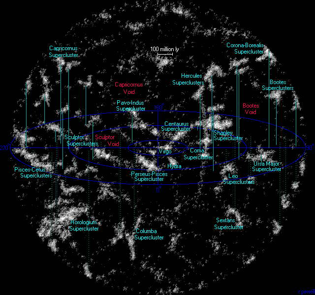

Сверхскопление галактик — многочисленные группы галактик и скоплений галактик в составе крупномасштабной структуры Вселенной. Галактики в нашей Вселенной не распределены равномерно — большинство из них объединены в группы и скопления, содержащие от десятков до нескольких тысяч галактик. Эти скопления и дополнительные изолированные галактики в свою очередь образуют ещё большие структуры, называемые сверхскоплениями, включающими от двух до двадцати галактических скоплений, которые расположены либо в галактических нитях, либо в узлах пересечения нитей. Размеры сверхскоплений достигают сотен миллионов световых лет. Сверхскопления настолько велики, что не являются гравитационно-связанными и, поэтому, принимают участие в расширении Хаббла. В пределах 1 млрд св. лет находится около 100 сверхскоплений[1].Ранее предполагалось, что сверхскопления являются самыми большими структурами во Вселенной. Однако после ряда недавних открытий, считается, что сверхскопления являются частью огромных стен, также называемых нитями, которые могут достигать в длину миллиарда световых лет, то есть более 5 % наблюдаемой Вселенной. При наблюдении сверхскоплений и более крупных структур в наши дни мы узнаём о состоянии Вселенной в то время, когда эти сверхскопления только образовались. Направления осей вращения галактик в сверхскоплениях также дают нам понимание процесса формирования галактик в ранней истории Вселенной.Сверхскопления имеют огромные размеры, поэтому для их изучения используется большое количество наблюдательных данных — в первую очередь, лучевые скорости галактик.

Ланиаке́я (также Ланиакеа, англ. Laniakea, по-гавайски — «необъятные небеса») — сверхскопление галактик, в котором, в частности, содержатся Сверхскопление Девы (составной частью которого является Местная группа, содержащая галактику Млечный Путь с Солнечной системой) и Великий аттрактор, в котором расположен центр тяжести Ланиакеи.
Диаметр Ланиакеи примерно равен 520 миллионам световых лет. Ланиакея состоит примерно из 100 тысяч галактик, движущихся совместно к некоторой области в космосе, а масса её примерно равна 1017 массам Солнца (примерно в 100 раз больше массы Сверхскопления Девы). Соседним с Ланиакеей является сверхскопление Персея-Рыб из цепи Персея-Пегаса (входящей в Комплекс сверхскоплений Рыб-Кита). Ланиакея была выделена по согласованным траекториям галактик.
Первая (трёхмерная) карта Ланиакеи была создана к сентябрю 2014 года с помощью радиотелескопа Грин-Бэнк и других телескопов. Для построения карты использовался Cosmicflows-2 (каталог движений галактик).
В состав Ланиакеи входят:
Местное сверхскопление галактик, в котором находится наша Галактика (Млечный Путь).
Сверхскопление Гидры-Центавра, в том числе:
Великий аттрактор,
Сверхскопление Гидры-Центавра,
Сверхскопление Павлина-Индейца,
Южное сверхскопление.
Ведущим автором первого исследования Ланиакеи является астроном Р. Брент Талли из Астрономического института на Гавайях, являющегося структурным подразделением Гавайского университета в Маноа.
Название Ланиакея, предложенное Нава’а Наполеоном, преподавателем одного из колледжей Гонолулу, является данью уважения полинезийским мореходам, использовавшим знание звёздного неба в навигации по Тихому океану.